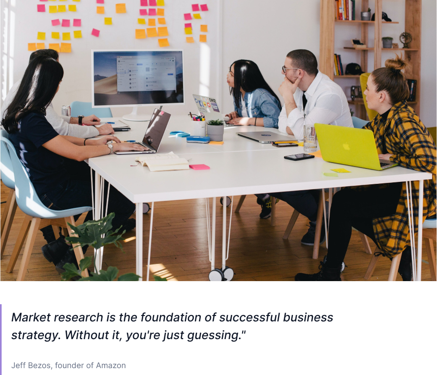

Who is a Researcher and how do Qwesty help them?
As a product manager, I understand the pain and struggle of new stage
Start-up founders, UX designers, UX writers, Market Researchers in
finding research participants especially those with no community.
It even get daunting as one has to go through the process of finding
one's target audience, and managing participants which is
time-consuming and frustrating.
We at Qwesty understood this pain, which is why we're introducing a
product that will solve the problem.
The pain and frustrations in trying to obtain reliable and useful data
is what gave birth to Qwesty
Who is a Participant and how do Qwesty help them?
But that isn't just where it ends.
What about the research participants? Those that give out this data
and information to projects and companies. Sometimes, these are just
busy persons who wants to help businesses make their products better,
persons who wants to invest in products growth by giving reliable data
but do get stucked in the boring nature of the process that it begins
to feel too much of a chore than a benefit.
But that's where Qwesty comes in.
We will make data sharing fun, easy, and engaging. It would be like a
game, and participants would be rewarded for participating. Our Vision
is a world where sharing data is something one look forward to. Where
it's actually fun and rewarding.
Importance of User Research and Why Qwesty
So, Qwesty is a gamified user research platform that makes it easy to find and manage participants. With Qwesty, User and Market Researchers that are interested in Nigerian audience can create and launch research studies quickly with more reliable data outcome.

Projects and businesses are already juggling a million things at once
inorder to ship a good product, already struggling with plenty of
problems running a business, so getting useful and reliable data
shouldn't be an extra burden.
Unlike other Platforms, Our Product is unique because.
1st: We gamify the research process for the participants to enjoy the
process itself.
2nd: We protect the privacy of every participant.
3rd: We also reward participants to make the quests worth looking
forward to.
4th: We provide participants to projects.
5th: We make the data useful by providing projects with their target
audience.
Who's Qwesty for?
Qwesty is for:
- A Nigerian student looking for ways to make stipends for data, books or tuition.
- A new stage Start-up or business owner looking for insights to help grow his/her business.
- A market researcher looking for a better way to collect accurate data
- A busy Nigerian professional who wants to contribute to the world in a meaningful way.
- A Nigerian tech savvy who loves testing new products.
- A retiree who wants to stay mentally active and engaged.
- A stay at home parent who wants to get rid of boredom.
- A Nigerian Web3 enthusiast who enjoys reviewing project.
- Also anyone who's involve in data sharing process.
Joining the Waiting List
Therefore, Our waiting list is an avenue to be ready for the new
experience and future of UX Research.
To join the waiting list, do the following:
- Go to the waiting list page and click on “Join WaitList”.
- It will take you to the “Researcher” and “Participants” section. Click on “Researcher” if you're trying to use Qwesty to find and participants, do your User research and its analytics. Or you click on “Participants” if you're a Nigerian, a tech savvy who loves checking out new Products and enjoy sharing useful information with Companies.
- Enter your email address and username,
- Go to Gmail for a notification that would be sent to you
- Congrats! If you got a notification. It shows you're in and can start inviting persons like you to experience the new mechanism of data sharing.
If not seen, please check out your email address to see if it's correct.
How do I earn my $Qwes
We're giving out 2000+ Qwes to PARTICIPANTS who invite their friend to
enjoy Qwesty with them.
The top 70th referrers will share 1,765 in the following order:
1st to 3rd Rank - 45 $Qwes
4th to 10th Rank - 40 $Qwes
11th to 30th Rank - 25 $Qwes
31st to 70th Rank - 15 $Qwes
While All other referral will receive 10 $Qwes.
📌 The reward balance and your position on the referral page are not
final, and the valid participants will be rewarded if they are among
the top referrers or other referrers.
Remember, When Qwestiers get real Qwestees, it gets QWESTY!